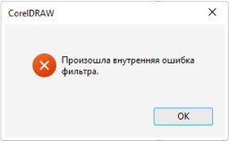
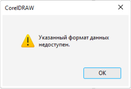
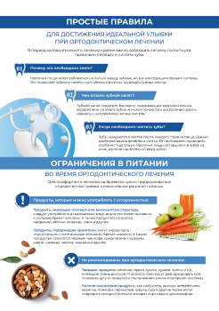

В мире дизайна мы сделали выбор в пользу Adobe, оставив за
бортом формат CorelDraw. Давайте разберем, почему именно Adobe стал нашим надежным союзником в
творчестве.
Adobe - это компания, представляющая широкий спектр
продуктов, среди которых вы, вероятно, знакомы с основными:
а также более 90 других продуктов
Более тысячи специалистов по всему миру активно участвуют в разработке и
обеспечивают высокое качество продуктов и их разнообразные возможности.
В то время как CorelDraw ограничивается только CorelDraw.
Поддержка CorelDraw практически отсутствует в Европе и
США, поскольку более 98% типографий в этих регионах не используют данный формат.
Главный недостаток CorelDraw заключается в преобразовании
документа во внутренний формат bitmap. Это особенно заметно при обработке растровых
изображений, где могут возникнуть различные артефакты, такие как неожиданные грани,
изменение цветов или полная инверсия изображения.


В отличие от этого, Illustrator лишен подобных неожиданностей и обладает
полной совместимостью с форматами PDF и EPS, необходимыми для полиграфии. Важно
отметить, что, несмотря на возможность сохранения файлов в формате PDF, CorelDraw плохо
распознает PDF файлы, что может привести к потере некоторых элементов макета. Поэтому
при подготовке макета для офсетной полиграфии Illustrator остается оптимальным выбором.

Современная лицензия CorelDraw может оцениваться в 600
долларов в год на одного пользователя, что может быть финансово недоступным для многих
типографий. Из-за этого они вынуждены использовать устаревшие версии программы, что может
привести к искаженному отображению контента.
Обучение наших дизайнеров работе в CorelDraw требовало бы
значительного времени. Учитывая, что это формат с тенденцией к упадку, вкладывание
человеческого капитала в него становится неоправданно.
Используя среду Adobe, мы вкладываемся в инновации, качество и признание в
мировом масштабе. Присоединяйтесь к нам в этом увлекательном путешествии в мир творчества, где каждый
проект становится настоящим произведением искусства.